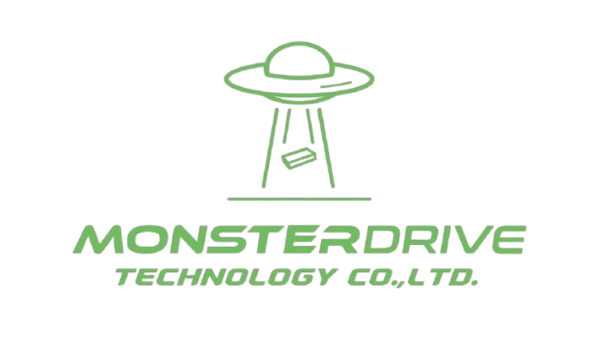
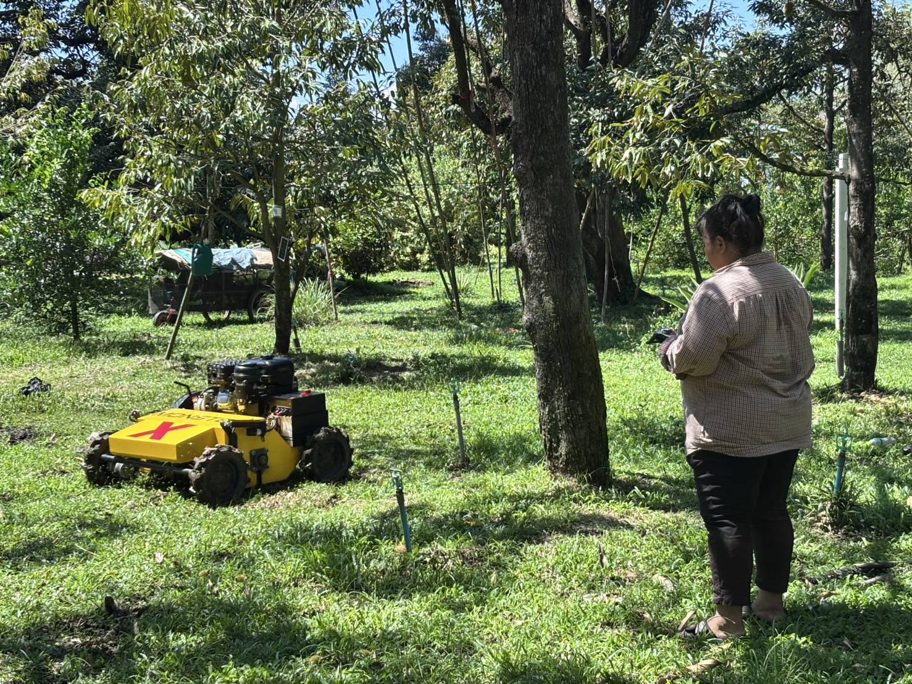
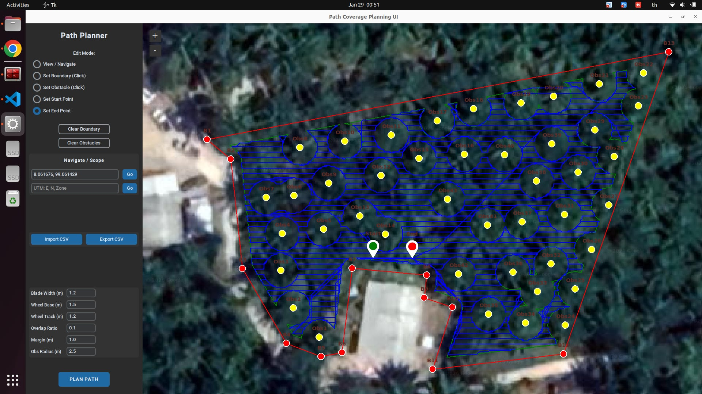
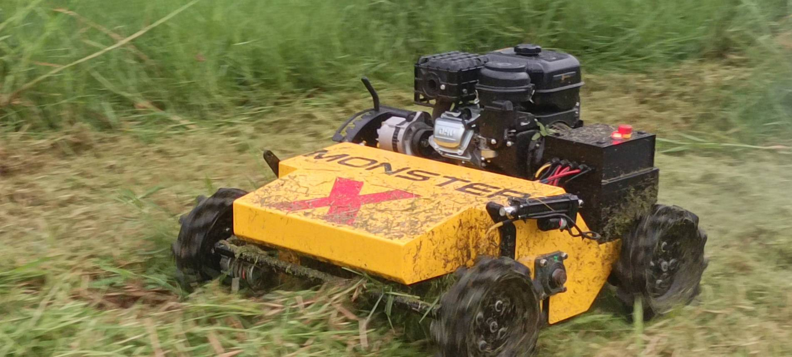
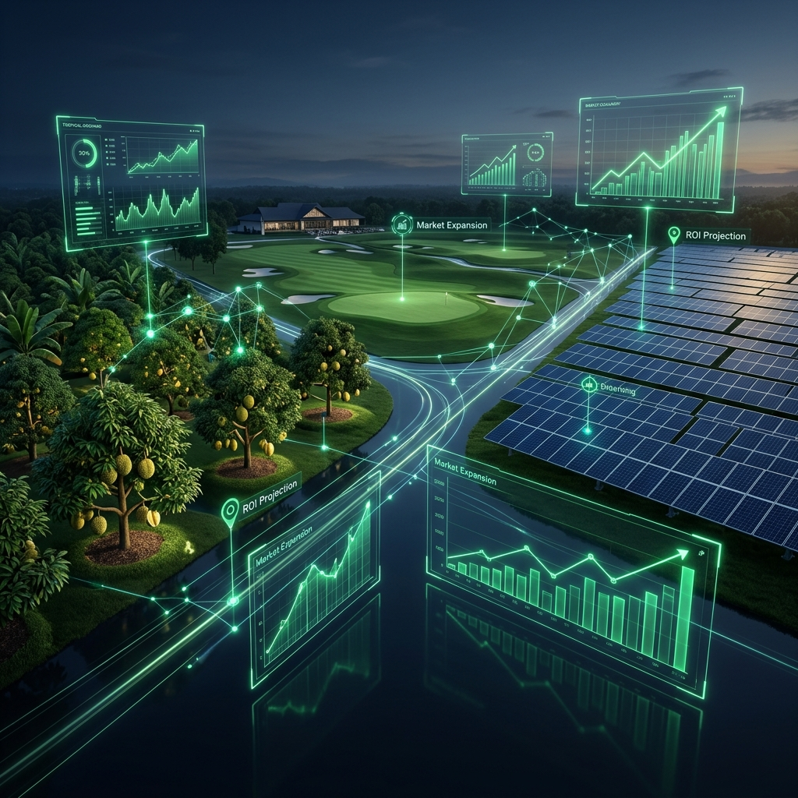
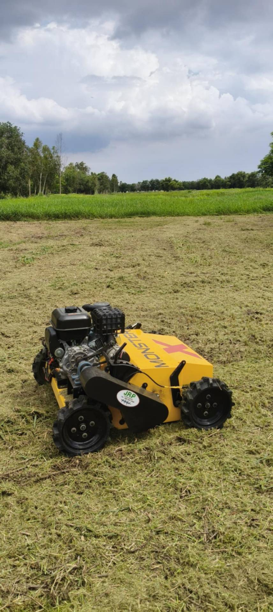
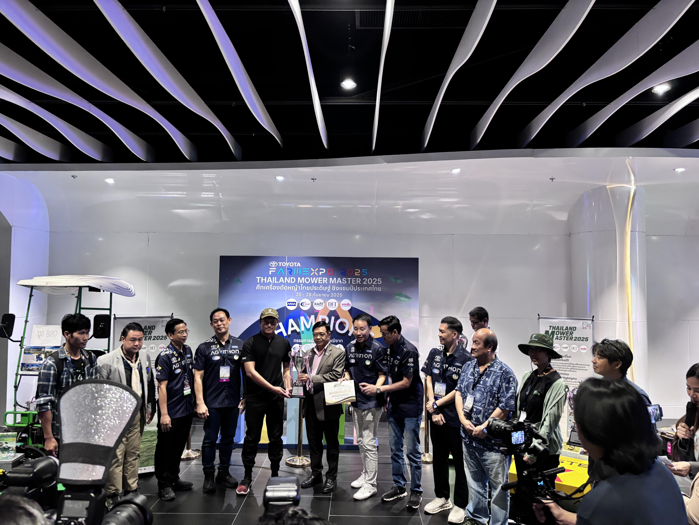

Monster Drive
แพลตฟอร์มระบบขับเคลื่อนอัตโนมัติ
เพื่ออนาคตการเกษตร
Agrowth Agtech Accelerator 2026
นำเสนอโดย: นายสมภัทร แพรกนกแก้ว
(CEO Monster Drive Technology)
ความท้าทายและอุปสรรคทางเทคนิคในการจัดการพื้นที่เกษตร

-
1) วงจรงานที่จำเจและต้นทุนค่าเสียโอกาส
การตัดหญ้าซ้ำๆ เสียเวลาที่ควรนำไปพัฒนาผลผลิตที่มีมูลค่าสูงกว่า
-
2) ความเสี่ยงด้านสุขภาพในสังคมเกษตรกรสูงอายุ
ภาวะลมแดด (Heatstroke) และอันตรายจากสัตว์มีพิษในพื้นที่เกษตร
-
3) กับดักการซ่อมบำรุงจากระบบปิด
บอร์ดควบคุมราคาถูกมักเป็นระบบปิด เมื่อเกิดความผิดพลาดเพียงเล็กน้อยก็นำไปสู่การต้องทิ้งและซื้อใหม่
-
4) ต้นทุนแฝงและความเสี่ยงด้านความรับผิดชอบ
ความเหนื่อยล้านำมาซึ่งอุบัติเหตุ (Human Error) ที่อาจก่อให้เกิดความเสียหายเกินคาด
-
5) ข้อจำกัดของหุ่นยนต์งานเดียวทำให้คืนทุนช้า
เราเปลี่ยนแนวคิดใหม่ให้เป็นหุ่นยนต์ที่เปลี่ยนหัวเครื่องมือได้ เพื่อให้คืนทุนไวขึ้น
-
6) ความทนทานของไดรฟ์ที่เหนือกว่ามาตรฐานทั่วไป
สร้างจากประสบการณ์ออกแบบหุ่นยนต์สนามรบ มั่นใจได้ในทุกสภาพแวดล้อมที่โหดร้าย
ระบบควบคุมอัจฉริยะและการออกแบบที่รองรับการใช้งานอเนกประสงค์


-
1) แผงวงจรควบคุมหลักที่ออกแบบและผลิตเอง (In-house Hardware)
พัฒนาเมนบอร์ดขึ้นเองทั้งหมด โดยใช้พื้นฐานความทนทานจากหุ่นยนต์สนามรบ (Robot War) ทนต่อแรงสั่นสะเทือน ความร้อน และความชื้น ซ่อมได้ลึกถึงระดับอะไหล่
-
2) ระบบนำทางระดับเซนติเมตร (GNSS RTK & IMU Fusion)
ใช้เทคโนโลยีนำทางแม่นยำสูงรวมกับเซนเซอร์วัดการเอียง (IMU) เพื่อให้ทำงานได้ตรงแนวแม้ในพื้นที่ลาดชันหรือใต้ต้นไม้ทึบ ทำงานแบบออฟไลน์ได้
-
3) แพลตฟอร์มรองรับงานอเนกประสงค์ (Modular Connectivity)
รองรับการเชื่อมต่ออุปกรณ์ต่อพ่วงหลากหลายผ่านระบบ CAN Bus มาตรฐาน ไม่ว่าจะเป็นชุดตัดหญ้า ชุดพ่นยา หรือหัวฉีดน้ำ ครบจบในเครื่องเดียว
-
4) ระบบการวางแผนเส้นทางอัจฉริยะ (Coverage Path Planning)
ซอฟต์แวร์ที่คำนวณเส้นทางครอบคลุม 100% โดยลดการซ้ำซ้อน ช่วยวางแผนและลำดับการทำงานให้ได้ระยะทางโดยรวมที่สั้นที่สุด เพื่อประหยัดทรัพยากร ลดต้นทุน และเพิ่มผลกำไรให้กับเกษตรกรได้อย่างยั่งยืน
โครงสร้างธุรกิจเชิงกลยุทธ์และการขยายตัวสู่ตลาดเป้าหมายที่มีมูลค่าสูง

-
1) รายได้ที่หลากหลายและการสร้างรายได้ต่อเนื่อง
โมเดล Recurring Income จาก PM Service และ SaaS ฟีเจอร์อัจฉริยะ
-
2) พลังของระบบที่ปรับเปลี่ยนได้และการต่อยอดตลาดเดิม
ยอดขายไดรฟ์ 700+ ชุด พร้อมอัปเกรดเป็นระบบอัตโนมัติได้ทันที
-
3) การเจาะกลุ่มตลาดเป้าหมายที่มีมูลค่าสูง
โซลาร์ฟาร์ม, สนามกอล์ฟ และสวนผลไม้ส่งออกขนาดใหญ่
-
4) ความได้เปรียบด้านต้นทุนและการบริหาร Supply Chain
ผลิตในประเทศ ต้นทุนต่ำกว่านำเข้า 30-50% พร้อมบริการอะไหล่รวดเร็ว
วิสัยทัศน์การเติบโตและกลยุทธ์การพัฒนาเทคโนโลยีในอนาคต

-
1) การพัฒนาเชิงวิศวกรรมสู่มาตรฐานสากล
ยกระดับ Chassis ให้ทนทานระดับอุตสาหกรรม โดยเน้นการออกแบบตามมาตรฐานความปลอดภัยระดับสากล
-
2) ระบบขับเคลื่อนอัตโนมัติขั้นสูงด้วย AI
ระบบหลบหลีกสิ่งกีดขวางแบบไดนามิกด้วยเทคโนโลยี Computer Vision และ LiDAR
-
3) แพลตฟอร์มการควบคุมแบบครบวงจร (Universal Interface)
แอปพลิเคชันที่ใช้งานง่ายแบบ Zero Learning Curve ช่วยให้เกษตรกรสั่งงานได้จากทุกที่ทุกเวลา
-
4) การสร้างระบบนิเวศข้อมูลเพื่อเกษตรแม่นยำ
มุ่งสู่การเป็นศูนย์กลางข้อมูลดิจิทัลของฟาร์ม (Digital Twin) เพื่อการบริหารจัดการทรัพยากรสูงสุด
ทีมงานผู้เชี่ยวชาญ
สมภัทร แพรกนกแก้ว
CEO (20+ Years Exp)
นนทนันธ์ สมมาตร์
Auto Eng (Auto Dynamics)
วารุส โดงกูล
Auto Eng (Navigation)
อานัส สาแม
Electronic Eng (Circuit Design)
นัฐพงศ์ พรหมแก้ว
Agri-Mech Expert (Robotics)
จีรพน บุญจริง
Machinist (Mechanical Design)
"เราคือทีมที่พร้อมจะสร้างหุ่นยนต์การเกษตรสัญชาติไทยให้เติบโตอย่างยั่งยืน"
